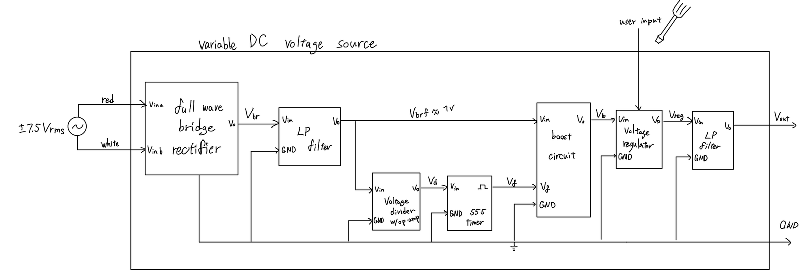
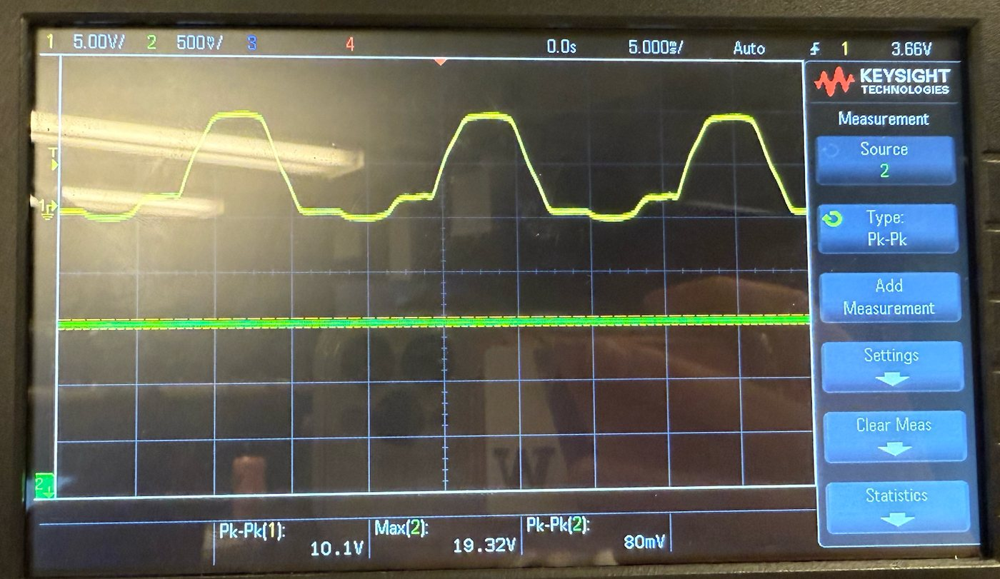
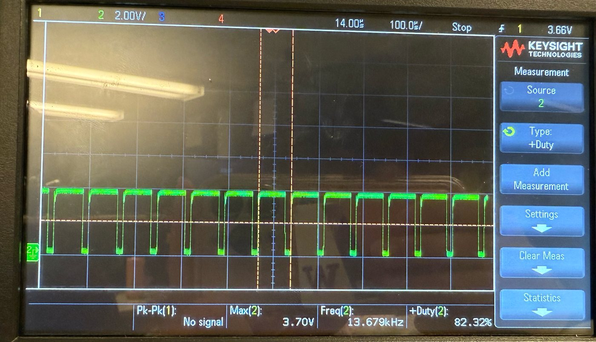

Power Electronics · UW EE 331 Final Project
AC to DC Voltage
Amplifying Converter
7.5 VrmsAC input
9.2–19.9 VMeasured DC range
≤80 mVRipple at 10 kΩ, 20 kΩ
Overview
Designed, simulated, and breadboarded a variable DC supply that takes ±7.5 Vrms from a lab transformer and produces a DC output adjustable from 10 V to 20 V with a single potentiometer, at up to 1 mA of load current. Because the rectified input peaks near 10 V, reaching 20 V requires a boost stage rather than a linear regulator alone.

Requirements
- Input of ±7.5 VAC from the laboratory transformer
- Output continuously adjustable from +10.0 to +20.0 VDC by one potentiometer, delivering 0 to 1.0 mA
- Rectifier and capacitive filter producing roughly 10 V unregulated with under 1.0 V ripple
- Boost topology: transistor-switched inductor, catch diode, and output capacitor, all within rated limits
- Switch clocked between 10 kHz and 100 kHz by an on-board 555 timer, with a function generator used only as a reference
- Under 100 mV ripple on the DC output
Design
- Rectifier and filter: full-wave bridge of four 1N4007 diodes, chosen over half-wave for lower ripple, into a 1 mF bulk capacitor with a 10 µF capacitor in parallel
- Boost stage: 100 mH inductor switched by a 2N7000 NMOS, 1N4148 catch diode, 0.66 mF output capacitor. With about 8.6 V after two diode drops and a duty cycle of D ≈ 0.8, the ideal output Vin / (1 − D) ≈ 43 V leaves ample headroom above 20 V
- Clock: 555 timer in astable mode, so the supply needs no external clock. RA = 43 kΩ, RB = 14.7 kΩ, C = 1 nF for a calculated 19.9 kHz at 79.7% duty
- Regulation and adjustment: reverse-biased zener strings bound the output. One 1N4744A (15 V) plus two 1N4732A (4.7 V) clamp the top at 24.4 V to protect the load; two 1N4732A set a 9.4 V floor, and a potentiometer in series with the floor string raises the output continuously above it
- Output filtering: ceramic capacitor for high-frequency switching noise alongside the electrolytic bulk capacitor
Bench Results
Built on a breadboard and measured on a Keysight DSOX1204G at three loads, with the potentiometer at each end of its travel. Simulation met every specification; the hardware came close but did not fully match it.
| Load | Pot setting | Output | Ripple (pk-pk) |
|---|---|---|---|
| 10 kΩ | Minimum | 9.16 V | 60 mV |
| 10 kΩ | Maximum | 19.32 V | 80 mV |
| 20 kΩ | Minimum | 9.22 V | 80 mV |
| 20 kΩ | Maximum | 19.68 V | 80 mV |
| 100 kΩ | Minimum | 9.26 V | 80 mV |
| 100 kΩ | Maximum | 19.87 V | 150 mV |

What Fell Short and Why
- Top of range: the maximum output reached 19.3 to 19.9 V depending on load, up to 0.7 V under the 20 V target at the heaviest load. The sag with load current likely comes from the output impedance of the open-loop zener regulator; closing the loop on duty cycle would hold the top end
- Ripple at light load: 150 mV at 100 kΩ and maximum output, over the 100 mV limit. More output capacitance, a higher switching frequency, and shorter breadboard wiring are the direct fixes
- Clock frequency: measured 13.7 kHz at 82.3% duty against a calculated 19.9 kHz. Still inside the 10 to 100 kHz window, but the 1 nF timing capacitor is small enough that breadboard parasitics and component tolerance shift the frequency noticeably

Tools & Skills
Boost Converter
Power Electronics
555 Timer
Zener Regulation
Multisim
Oscilloscope
Breadboard Prototyping